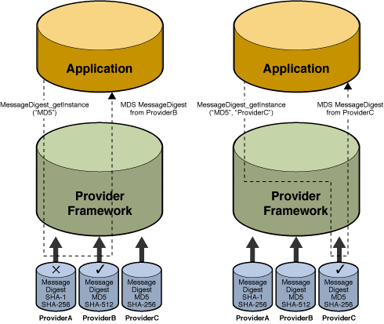
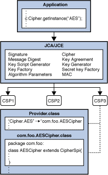
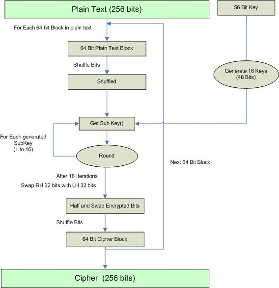
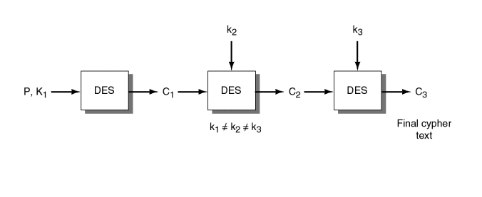
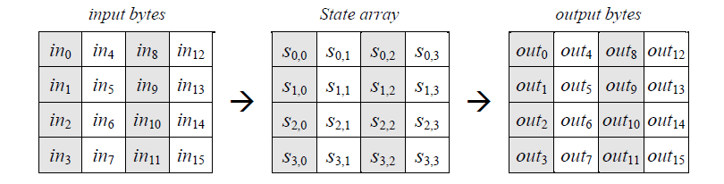
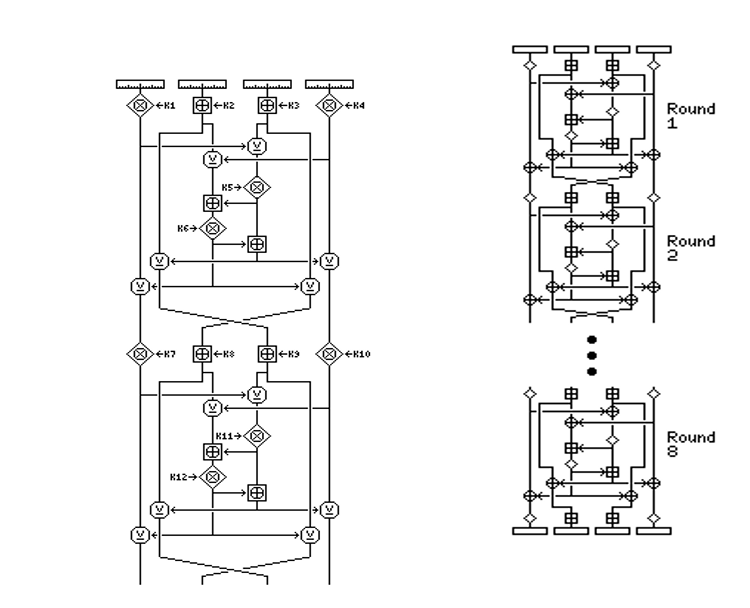
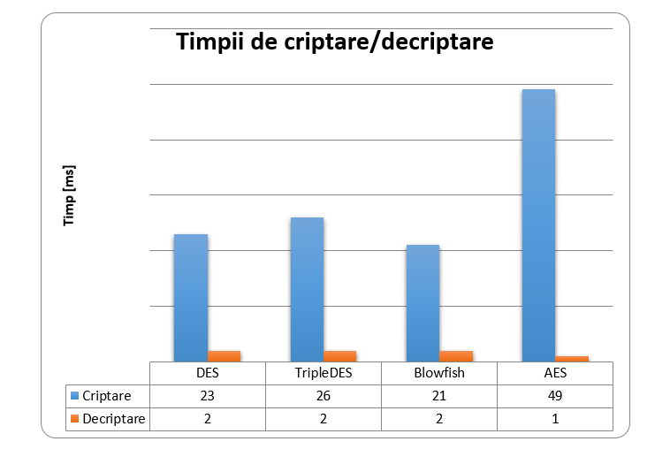
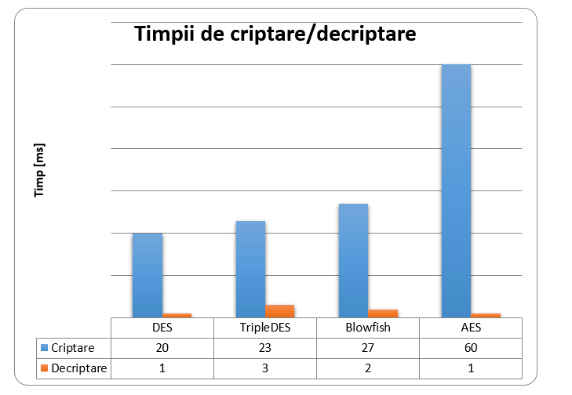
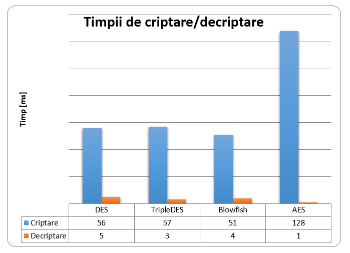

1. Introducere in principiile de proiectare si implementare a algoritmilor de criptare in Java
1.1 Principii de proiectare
JCA a fost conceput în jurul urmatoarelor principii [25]:
- independența implementării și interoperabilitatea
- independența algoritmului și extensibilitatea
Independența de implementare și independența algoritmului sunt complementare; Puteți utiliza servicii criptografice, cum ar fi semnăturile digitale și mesajele digests, fără a vă îngrijora de detaliile de implementare sau chiar algoritmii care stau la baza acestor concepte. În timp ce independența algoritmului complet nu este posibilă, JCA furnizează API-uri standardizate, specifice algoritmului. Când implementarea-independenta nu este de dorit, JCA permite dezvoltatorilor să indice o implementare specifică.
Independența algoritmului se realizează prin definirea tipurilor de engine-“motoare” (servicii) criptografice și prin definirea claselor care asigură funcționalitatea acestor motoare criptografice. Aceste clase sunt numite clase de engine (motoare), iar exemplele sunt clasele MessageDigest, Signature, KeyFactory, KeyPairGenerator și Cipher.
Implementarea independenței se realizează utilizând o arhitectură bazată pe furnizori (provider). Termenul furnizor de servicii criptografice (CSP- Cryptographic Service Provider) se referă la un pachet sau la un set de pachete care implementează unul sau mai multe servicii criptografice, cum ar fi algoritmi de semnătură digitală, algoritmi de tip digests a mesajelor și servicii de conversie a cheilor. Un program poate cere pur și simplu un anumit tip de obiect (cum ar fi un obiect Signature) care implementează un anumit serviciu (cum ar fi algoritmul de semnătură DSA) și obține o implementare de la unul dintre furnizorii instalați. Dacă se dorește, un program poate solicita în schimb o implementare de la un anumit furnizor. Furnizorii pot fi actualizați în mod transparent pentru aplicație, de exemplu atunci când sunt disponibile versiuni mai rapide sau mai sigure.
Implementarea interoperabilității înseamnă că diferite implementări pot funcționa una cu alta, se pot utiliza reciproc sau se verifică reciproc semnăturile. Aceasta ar însemna, de exemplu, că pentru aceiași algoritmi, o cheie generată de un furnizor ar fi utilizabilă de către un alt furnizor și o semnătură generată de un furnizor ar putea fi verificată de un alt furnizor.
Extensibilitatea algoritmului înseamnă că pot fi adăugați cu ușurință noi algoritmi care se încadrează într-una dintre clasele de tip engine acceptate.
1.2. Arhitectura Cryptographic Service Providers
java.security.Provider este clasa de bază pentru toți furnizorii de securitate. Fiecare CSP conține o instanță a acestei clase care conține numele furnizorului și listează toate serviciile / algoritmii de securitate pe care le implementează. Atunci când este necesară o instanță a unui anumit algoritm, cadrul JCA consultă baza de date a furnizorului și, dacă se găsește o potrivire acceptabilă, instanța este creată.
Furnizorii conțin un pachet (sau un set de pachete) care furnizează implementări concrete pentru algoritmii criptografici anunțați. Fiecare instalare JDK are instalat și configurat unul sau mai mulți furnizori în mod implicit. Furnizorii suplimentari pot fi adăugați în mod static sau dinamic (consultați clasele Provider și Security). Clienții pot configura mediul lor de execuție pentru a specifica ordinea preferințelor furnizorului. Ordinea preferinței este ordinea în care furnizorii sunt căutați pentru serviciile solicitate atunci când nu este solicitat niciun furnizor specific.
Pentru a utiliza JCA, o cerere solicită pur și simplu un anumit tip de obiect (cum ar fi un MessageDigest) și un anumit algoritm sau serviciu (cum ar fi algoritmul “MD5”) și primește o implementare de la unul dintre furnizorii instalați. Alternativ, programul poate solicita obiectele de la un anumit furnizor. Fiecare furnizor are un nume folosit pentru a se referi la acesta.
md = MessageDigest.getInstance(“MD5”);
md = MessageDigest.getInstance(“MD5”, “ProviderC”);
Următoarea figură ilustrează solicitarea unei implementări a algoritmului “MD5”. Figura arată trei furnizori diferiți care implementează algoritmi diferiți de mesaje (“SHA-1”, “MD5”, “SHA-256” și “SHA-512”). Furnizorii sunt ordonați după preferință de la stânga la dreapta (1-3). În prima ilustrare, o aplicație solicită implementarea algoritmului MD5 fără a specifica numele furnizorului. Furnizorii sunt căutați în ordinea preferințelor și este returnată implementarea de la primul furnizor care furnizează respectivul algoritm, ProviderB. În al doilea caz, cererea cere implementarea algoritmului MD5 de la un anumit furnizor, ProviderC. De data aceasta, implementarea de la ProviderC este returnată, chiar dacă un furnizor cu o comandă de prioritate mai mare, ProviderB, furnizează de asemenea o implementare MD5.

Implementările criptografice în JDK sunt distribuite prin mai mulți furnizori diferiți (Sun, SunJSSE, SunJCE, SunRsaSign) în primul rând din motive istorice, dar într-o mai mică măsură de tipul de funcționalitate și a algoritmilor pe care îi oferă. Alte medii de rulare în Java pot să nu conțină neapărat acești furnizori Oracle/Sun, deci aplicațiile nu ar trebui să solicite o implementare specifică furnizorului, cu excepția cazului în care se știe că un anumit furnizor va fi disponibil.
JCA oferă un set de API-uri care permit utilizatorilor să interogheze ce furnizori sunt instalați și ce servicii suportă.
Această arhitectură facilitează, de asemenea, utilizatorilor finali să adauge facilitati suplimentare. Multe implementări ale furnizorilor de terțe părți sunt deja disponibile. Consultați Clasa furnizorilor pentru mai multe informații despre modul în care sunt scrise, instalate și înregistrate la furnizori.
1.3. Cum sunt implementați furnizorii
După cum s-a menționat mai devreme, independența algoritmului este atinsă prin definirea unei interfețe generice de programare de aplicații (API- Application Programming Interface) pe care toate aplicațiile le utilizează pentru a accesa un tip de serviciu. Implementarea independenței se realizează prin faptul că toate implementările furnizorilor sunt conforme cu interfețe bine definite. Exemple de clase de motoare sunt astfel “susținute” de clase de implementare care au aceleași semnături de metode. Apelurile de aplicații sunt direcționate prin clasa motorului și sunt livrate la implementarea suportului de bază. Implementarea gestionează solicitarea și returnează rezultatele corecte.Metodele API ale aplicațiilor din fiecare clasă de motoare sunt direcționate spre implementările furnizorului prin intermediul unor clase care implementează interfața de furnizor de servicii (SPI- Service Provider Interface) corespunzătoare. Aceasta înseamnă că, pentru fiecare clasă de motoare, există o clasă SPI abstractă corespunzătoare care specifica metodele pe care fiecare algoritm al furnizorului de servicii criptografice trebuie să le implementeze. Numele fiecărei clase SPI este același cu cea a clasei corespunzătoare a motorului, urmată de Spi. De exemplu, clasa de motoare Signature oferă acces la funcționalitatea unui algoritm de semnătură digitală. Implementarea reală a furnizorului este furnizată într-o subclasă de SignatureSpi. Aplicațiile numesc metodele API ale clasei de motor, care la rândul lor numesc metodele SPI în implementarea reală.Fiecare clasă SPI este abstractă. Pentru a furniza implementarea unui anumit tip de serviciu pentru un anumit algoritm, un furnizor trebuie să defineasca clasa SPI printr-o subclasa corespunzătoare și să furnizeze implementări pentru toate metodele abstracte.Pentru fiecare clasă de motoare din API, instanțele de implementare sunt solicitate și instanțiate apelând metoda fabricii getInstance () din clasa motorului. O metodă din fabrică (factory) este o metodă statică care returnează o instanță a unei clase. Clasele de motoare utilizează mecanismul de selectare a furnizorilor-cadru descris inainte pentru a obține implementarea efectivă a asistenței (SPI) și apoi creează obiectul motor propriu-zis. Fiecare instanță a clasei motorului încapsulează (ca si câmp privat) instanța clasei SPI corespunzătoare, cunoscută ca obiect SPI. Toate metodele API ale unui obiect API sunt declarate finale, iar implementările lor invocă metodele SPI corespunzătoare obiectului SPI încapsulat.Pentru a face acest lucru mai clar, examinați următorul cod și ilustrația:
import javax.crypto.*;
Cipher c = Cipher.getInstance(“AES”);
c.init(ENCRYPT_MODE, key);

Aici o aplicație dorește o instanță javax.crypto.Cipher “AES” și nu are grijă care furnizor este utilizat. Aplicația numește metodele fabricii (factory) getInstance () din clasa motorului Cipher, care la rândul său solicită cadrului JCA să găsească prima instanță a furnizorului care acceptă “AES”. Cadrul consultă fiecare furnizor instalat și obține instanța furnizorului din clasa Provider. (Amintiți-vă că clasa Provider este o bază de date a algoritmilor disponibili.) Cadrul caută fiecare furnizor, găsind în cele din urmă o intrare adecvată în CSP3. Această intrare a bazei de date indică clasa de implementare com.foo.AESCipher care extinde CipherSpi și este astfel potrivită pentru utilizarea de către clasa motorului Cipher. Este creată o instanță a com.foo.AESCipher și este încapsulată într-o instanță nou creată de javax.crypto.Cipher, care este returnată aplicației. Atunci când aplicația efectuează acum operația init () pe instanța Cipher, clasa motorului Cipher direcționează cererea în metoda de suport engineInit() în clasa com.foo.AESCipher.
1.4. Gestiunea cheilor
O bază de date numită “keystore” poate fi utilizată pentru a gestiona un depozit de chei și certificate. Keystores sunt disponibile pentru aplicațiile care au nevoie de date pentru autentificare, criptare sau semnare.Aplicațiile pot accesa o cheie de stocare prin intermediul implementării clasei KeyStore, care se află în pachetul java.security. O implementare implicită KeyStore este furnizată de Oracle/Sun Microsystems. Ea implementează cheia de stocare ca fișier, folosind un tip de format de chei proprietate (format) numit “jks”. Sunt disponibile și alte formate de chei, cum ar fi “jceks”, care este un format alternativ de chei de stocare proprietar cu criptare mult mai puternică decât “jks” și “pkcs12”, care se bazează pe standardul RSA PKCS12 Exchange Information Syntax Standard.Aplicațiile pot alege diferite implementări de chei de stocare de la diferiți furnizori, folosind același mecanism furnizor descris inainte.
2. Proiectare și rezultate experimentale ale algoritmilor consacrati
2.1. DES (Data Encryption Standard)
În anul 1972, NBS (National Bureau of Standars) conștientizează necesitatea uniu algoritm criptografic puternic care să protejeze informații non-secrete. Algoritmul trebuia să fie ieftin, disponibil tuturor și foarte sigur. IBM a început să studieze acest algoritm care, după mai multe modificări realizate de NBS și NSA (National Security Agency) a fost publicat în 1977, numindu-se DES.
DES criptează și decriptează datele în blocuri de 64 biți, folosind o cheie de lungime 64 biți. Din cei 64 de biți ai cheii, doar 56 sunt folosiți propriu-zis de algoritm, restul de 8 fiind folosiți ca biți de paritate. Blocul de text în clar de la intrare este de 64 biți, rezultând la ieșire un bloc de 64 biți de text cifrat. Datorită faptului că operează pe blocuri de aceeași dimensiune și folosește atât permutarea cât și substituția, DES este considerat în egală măsură un cifru bloc și un cifru produs (un cifru bloc care iterează mai multe operații simple în urma cărora rezultă un cifru mai puternic).
DES este alcătuit din 16 pași identici de procesare, numiți runde, care produc textul cifrat. În urma studiilor s-a concluzionat că numărul de runde este exponențial proporțional cu timpul necesar aflării cheii secret folosind atacul de tip forță brută. Pe măsură ce crește numărul de runde, securitatea algoritmului crește exponențial.

Pașii de procesare: [2]
- Textul în clar este împărțit în blocuri de 64 biți.
- Din cheia de 56 biți se generează 16 chei de 48 biți. Cheia de 56 biți folosită pentru criptare este în realitate folosită doar la generarea primei sub-chei și nu este folosită în mod direct pentru criptarea datelor.
- Textul în clar, o dată împărțit în blocuri, este supus unui proces de permutare bazat pe un table care specifică modul în care biții sunt permutați: bitul unul este mutat pe poziția bitului 40, bitul 2 pe poziția 23 etc.
- După realizarea permutării, biții sunt trecuți prin cele 16 runde, folosind câte una din cele 16 sub-chei generate.
- Cei 64 biți creați la pasul 3 sunt pasați unei runde, unde sunt împărțiți în 2 blocuri de câte 32 biți și procesați cu cheia corespunzătoare rundei respective.
- Pasul 4 este repetat de 16 ori. Rezultatul unei runde este livrat următoarei runde.
- După terminarea celei de-a 16-a runde, cele 2 jumătăți de câte 32 biți sunt lipite, rezultând un bloc de 64 biți.
- Blocul de 64 biți este din nou permutat, folosind funcția inversă celei de la pasul 3.
2.2. TripleDES
Când s-a constatat că cheile de 56 biți folosite de DES nu sunt suficiente pentru a proteja datele împotriva atacurilor de tip forță brută, 3DES a fost soluția pentru mărirea spațiului cheilor fără a schimba algoritmul. 3DES, numit și Triple DES, este un cifru bloc care aplică de 3 ori DES.

Utilizarea celor trei pași este importantă pentru a evita atacurile “meet-in-the-middle”.
Triple DES, cu 3 chei diferite de 56 biți are o lungime a cheii de 168 biți. Datorită atacurilor “meet-in-the-middle”, securitatea efectivă este doar de 112 biți. Cel mai eficient atac asupra 3DES cu trei chei necesită aproximativ aproximativ 232 texte clare cunoscute, 2113 paşi, 290 criptări DES individuale, şi 288 unități de stocare. [3]
2.3. AES (Advanced Encryption Standard)/Rijndael
Acest standard precizează algoritmul Rijndael, un cifru simetric de tip bloc care poate procesa blocuri de date de 128 biti, folosind chei cu lungimi de 128, 192 sau 256 biți. În publicația FIPS nr. 197 (4), operațiile sunt definite sub forma unor operații pe matrice. La început, blocul este copiat într-un tablou numit state, câte 4 octeți pe o coloană.

Algoritmul modifică la fiecare pas acest tablou state, şi îl furnizează apoi ca ieşire. Funcţionarea sa este descrisă de următorul pseudocod [4]:
Cipher(byte in[4*Nb], byte out[4*Nb], word w[Nb*(Nr+1)])
begin
byte state[4,Nb]
state = in
AddRoundKey(state, w[0, Nb-1])
for round = 1 step 1 to Nr–1
SubBytes(state)
ShiftRows(state)
MixColumns(state)
AddRoundKey(state, w[round*Nb, (round+1)*Nb-1])
end for
SubBytes(state)
ShiftRows(state)
AddRoundKey(state, w[Nr*Nb, (Nr+1)*Nb-1])
out = state
end
Nb reprezintă numărul de coloane ale tabloului state(în varianta standard este egal cu 4), Nr are o valoare egală cu 10, 12 sau 14, în funcție de lungimea cheii (128,192,256). Metoda SubBytes este un cifru de substituție, metoda ShiftRows constă în deplasarea ciclică a octeţilor de pe rânduri, astfel: primul rând nu se deplasează; al doilea rând se deplasează la stânga cu o poziţie; al treilea rând se deplasează la stânga cu două poziţii; al patrulea se deplasează la stânga cu trei poziţii. (4) În pasul MixColumns fiecare coloană a tabloului este înmulțită cu un polinom urmând ca la pasul AddRoundKey să fie folosită cheia. El constă într-o simplă operaţie de „sau-exclusiv” pe biţi între tabloul state şi cheia de rundă (o cheie unică pentru fiecare iteraţie, cheie calculată pe baza cheii secrete).
2.4. Blowfish
Blowfish este un cifru simetric bloc care poate înlocui DES sau IDEA. El necesită o cheie de lungime variabilă, între 32 și 448 biți. Blowfish a fost conceput în 1993 de către Bruce Schneier, ca o alternativă gratuită și rapidă la algoritmii de criptare existenți. Blowfish este nepatentat, nu necesită cumpărarea unei licențe și este disponibil gratuit pentru toți utilizatorii.
Articolul [5] original care prezintă cifrul a fost prezentat la workshop-ul First Fast Software Encryption de la Cambridge, UK (urmând să fie publicat de Springer-Verlag, Lecture Notes in Computer Scrience #809,1994).
Blowfish este o rețea Feistel care iterează o funcție simplă de criptare de 16 ori. Fiecare ciclu este format dintr-o permutare dependentă de cheie și o substituție dependentă și de cheie li de date. Dimensiunea blocului este de 64 biți, cheia are o lungime variabilă de până la 448 biți. Algoritmul constă în două parți: expandarea cheii și criptarea datelor. În urma expandării cheii, o cheie de până la 448 biți se transformă în mai multe matrici de sub-chei care totalizeaza 4168 biți. Toare operațiile sunt adunări și aplicari de funcții XOR pe cuvinte de 32 biți.
2.5. IDEA
IDEA (International Data Encryption Algoritm) este un cifru bloc proiectat de Xuejia Lai și de James Massey în Elveția, în anul 1991. Scopul algoritmul era de a înlocui standardul DES. IDEA este o versiune revizuită a unui cifru mai vechi, PES (Proposed Encryption Standard). Inițial, IDEA a fost numit IPES (Improved PES).
Cifrul a fost proiectat în cadrul unui contract de cercetare cu Fundația Hasler, care a devenit parte din Ascom-Tech AG. Cifrul e patentat în mai multe țări dar este disponibil gratuit pentru uz non-comercial. Numele IDEA este marcă înregistrată. Brevetul a expirat in 2010-2011.
IDEA operează pe blocuri de 64 biți, folosind o cheie de 128 biți și constă într-o serie de 8 transformări (runde) identice și o transformare finală. Din cheia de 128 biți sunt derivate 62 de sub-chei a câte 16 biți fiecare. Două dintre ele sunt folosite în cadrul fiecărei runde, patru sunt folosite înaintea fiecărei runde și după ultima rundă.
Blocul de text în clar este divizat în 4 sub-blocuri de 16 biți. Sunt folosite 3 operații pentru a combina două valori de 16 biți într-un rezultat de 16 biți: adunare, XOR și înmulțire.
În diagrama de criptare (Fig. 7, Fig. 8) se folosesc următoarele simboluri:
 – Înmulțire modulo
– Înmulțire modulo
 – Adunare modulo
– Adunare modulo
 – XOR pe biți
– XOR pe biți

3. Analiză comparativă a algoritmilor de criptare de baza
S-a construit o clasă numită Test în limbajul de programare Java, folosind facilitățile oferite de JCE (Java Cryptography Extension). Scopul acesteia este de a testa diverși algoritmi clasici de criptare simetrică și de a calcula timpii necesari criptării și decriptării. În scopul criptării s-a ales o secvență de tip String, unică în cazul tuturor testelor, care reprezintă o secvență din ADN-ul uman. Secvența de testare este:
TAACAGATTGATGATGCATGAAATGGGCCCATGAGTGGCTCCTAAAGCAGCTGCTTACAGATTGATGATGCATGAAATGGGGGGTGGCCAGGGGTGGGGGGTGAGACTGCAGAGAAAGGCAGGGCTGGTTCATAACAAGCTTTGTGCGTCCCAATATGACAGCTGAAGTTTTCCAGGGGCTGATGGTGAGCCAGTGAGGGTAAGTACACAGAACATCCTAGAGAAACCCTCATTCCTTAAAGATTAAAAATAAAGACTTGCTGTCTGTAAGGGATTGGATTATCCTATTTGAGAAATTCTGTTATCCAGAATGGCTTACCCCACAATGCTGAAAAGTGTGTACCGTAATCTCAAAGCAAGCTCCTCCTCAGACAGAGAAACACCAGCCGTCACAGGAAGCAAAGAAATTGGCTTCACTTTTAAGGTGAATCCAGAACCCAGATGTCAGAGCTCCAAGCACTTTGCTCTCAGCTCCACGCAGCTGCTTTAGGAGCCACTCATGAG
Pentru a putea calcula intervalul de timp necesar criptării, respectiv decriptării, s-a folosit metoda public static long currentTimeMillis() din clasa System care returnează ora de la momentul respectiv în milisecunde.
Pentru a afla timpul necesar criptării, s-au realizat 2 apeluri ale metodei currentTimeMillis() în următorul mod:
long start1=System.currentTimeMillis();
Cipher DESCipher = Cipher.getInstance(“DES”);
DESCipher.init(Cipher.ENCRYPT_MODE, DESKey);
byte[] ciphertext = DESCipher.doFinal(plaintext);
long end1=System.currentTimeMillis();
Primul apel s-a făcut înaintea instanțierii obiectului Cipher iar cel de-al doilea dupa realizarea criptării. În cazul decriptării s-a procedat similar. Pentru a afla durata necesară celor două operații s-a calculat, în ambele cazuri, diferența dintre cele două variabile care conțineau informații despre momentul în care s-a realizat apelul:
time1=end1-start1
Codul a fost rulat pentru fiecare algoritm, pe 3 sisteme diferite. Rezultatele au fost copiate într-un tabel Excel, după care s-au realizat următoarele digrame.
Sistem 1: Intel, OS – Windows

Sistem 2: Intel, OS – Ubuntu

Sistem 3: AMD, OS – Windows

Se poate observa că în cazul algoritmilor DES, TripleDES și Blowfish duratele necesare criptării sunt foarte apropiate. AES, în schimb, necesită un timp mult mai mare pentru criptare dar un timp foarte mic pentru decriptare. De asemenea, în funcție de performanțele sistemului, de sistemul de operare instalat, precum și de aplicațiile care rulează și consumă memorie în momentul testului, duratele vor varia.
Bibliografie
- Băjenescu, M. Borda. Securitatea în informatică și telecomunicații. Cluj-Napoca : Dacia, 2001.
- An inside look at Symmetric Encryption. DotNetSlackers. http://dotnetslackers.com/articles/security/AnInsideLookAtSymmetricEncryption.aspx.
- Lucks, Stefan. Attacking Triple Encryption. London : Springer-Verlag, 1998, Lecture Notes In Computer Science, Vol. 1372.
- Specification for the Advanced Encryption Standart. Computer Security Resource Center. http://www.csrc.nist.gov/publications/fips/fips197/fips-197.pdf.
- Description of a New Variable-Length Key, 64-Bit Block Cipher (Blowfish). Schneier, Bruce.l.: Springer-Verlag, 1994, Fast Software Encryption, Cambridge Security Workshop Proceedings (December 1993).
- Savard, John. IDEA (International Data Encryption Algorithm). [Interactiv] http://www.quadibloc.com/crypto/co040302.htm.
- Genetics Home Reference. [Interactiv] U.S. National Library of Medicine. http://ghr.nlm.nih.gov/handbook/basics/dna.
- Tatiana Hodorogea, Mircea-Florin Vaida, BLOOD ANALYSIS AS BIOMETRIC SELECTION OF PUBLIC KEYS, 7 th International Carpathian Control Conference ICCC’2006, Ostrava – Beskydy, Czech Republic, May 29-31, 2006, pp. 675-678
- How to Implement a Provider for the JavaTM Cryptography Extension. Sun Microsystems. http://download.oracle.com/otn_hosted_doc/jdeveloper/904preview/jdk14doc/docs/guide/security/jce/HowToImplAJCEProvider.html.
- Microsystems, Sun. Developer Resources for Java Technology. Certification Form for CSPs. http://www.oracle.com/technetwork/es/java/javase/downloads/jce-7-download-432124.html.
- A Brief History of Cryptography. Cypher Research Laboratories Pty. Ltd. http://www.cypher.com.au/crypto_history.htm.
- Java Cryptography Architecture. Sun Microsystems. http://docs.oracle.com/javase/6/docs/technotes/guides/security/crypto/CryptoSpec.html
- Scott Oaks, Java Security (2nd Edition), O’Reilly & Associates, Inc, 2017
- Ashish Gehani, Thomas LaBean, John Reif. DNA-Based Cryptography. l.: DIMACS Series in Discrete Mathematics and Theoretical Computer Science, 1999, Vol. 54.
- DNA Alphabet. VSNS BioComputing Division. http://www.techfak.uni-bielefeld.de/bcd/Curric/PrwAli/node7.html#SECTION00071000000000000000.
- Hook, David. Beginning Cryptography with Java. l. : Wrox Press, 2005.
- Knudsen, Jonathan B. Java Cryptography. l.: O’Reilly, 1998.
- Wagner, Neal R. The Laws of Cryptography with Java Code. [PDF] 2003.
- Web Architecture. [Interactiv] School of Information, UC Berkeley. http://dret.net/lectures/web-fall08/.
- Cloud Garden – Jigloo GUI Builder. Cloud Garden (Java Resources), Cloud Garden. http://www.cloudgarden.com/jigloo/.
- Konheim, Alan G. Computer Security and Cryptography. New Jersey: John Wiley & Sons, Inc., 2007.
- Hodorogea Tatiana, Vaida Mircea-Florin, COMPLEXITY OF DNA ENCRYPTION SYSTEM AS A SUBSET OF JAVA CRYPTOGRAPHY EXTENSION, IASTED International Conference on Biomedical Engineering (BioMed 2008), 13-15 Feb., Innsbruck, Austria, paper 601-167, pp. 19-24
- Mircea-F. Vaida, Alexandra Vanea, Radu Terec, Raport tehnic privind Securitatea alternativa folosind mediul Java, RTH 09005, septembrie 2009, Laborator Helios, Director Mircea-Florin Vaida, Univ. Tehnica din Cluj-Napoca, ISSN: 1453-875X, pp. 82, ISSN 1454-0665
- Olga Tornea, Monica Borda, Tatiana Hodorogea, Mircea-Florin Vaida, ENCRYPTION SYSTEM WITH INDEXING DNA CHROMOSOMES CRYPTOGRAPHIC ALGORITHM, IASTED International Conference on Biomedical Engineering (BioMed 2010), 15-18 Feb., Innsbruck, Austria, paper 680-099, pp. 12-15
- Oracle, JCA Design Principles, http://docs.oracle.com/javase/7/docs/technotes/guides/security/crypto/CryptoSpec.html#Design